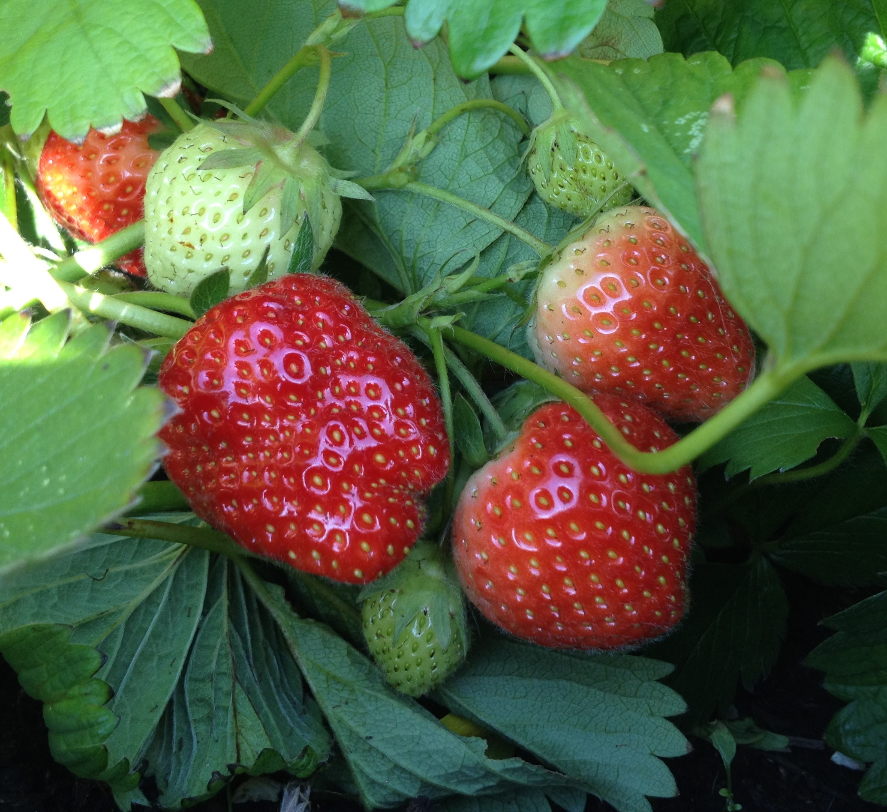

How does your garden grow?
16-Jun-2017 | Milku
Probably better than ours, but we have got some things to harvest.
It's Day 16 of 30 Days Wild and we've been checking what's growing in our garden.
As I’ve mentioned before, my humans don’t grow many flowers in their garden. They much prefer to nurture fruit and vegetables. After all, some of those trees and plants can look quite pleasant. The flowers on the purple-podded peas are very pretty. It's just a shame that they are still some way off giving me a treat and my humans a dinner ingredient. I hope my humans haven’t planted sweet peas by mistake…they would be disappointed!
The jostaberry bush is laden with berries so they’re hopeful of a good crop in a few weeks. I've heard that they are a cross between gooseberries and blackcurrants...I hope they don't think I'll be eating any!
Chard, carrots, aubergines and runner beans have been battered by the recent stormy weather, but hopefully will recover and look a bit healthier soon. I’m really looking forward to getting my teeth around a home grown carrot. They’re my favourite treat. My humans tell me that they’re not growing orange carrots…but I’m not like them…I will try things that are different.
I’ve seen chilli peppers growing on the plants. Lots of greenery in the greenhouse, but only a few tiny tomatoes and no sign of any bell peppers yet.
But they do have some things that are ready to pick. They’ve sampled some yellow courgettes. I noticed that they haven’t let me try any of those yet. Selfish lot.
They’ve harvested a big bundle of rhubarb so someone will be having crumble for dessert.
I had been waiting eagerly for the strawberries because my littlest human, who is a big of that fruit, told me how delicious they are. I knew that she’s also a big fan of mine so would definitely let me sample whatever she picked.
There were only three big red strawberries ready and my little human did give me a slice off one. Now, I don't mean to be ungrateful, but I hope they don't try to give me any more. Where was my cream? I did take the pieces in to my den to eat, but I just had to leave them there. I'm not keen. I had to clear my palette with a nice tasty hamster treat.